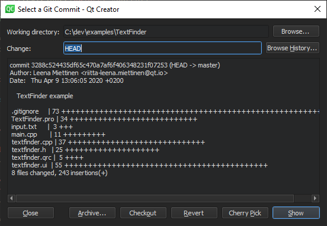

Apply actions to commits
To browse a directory or the commit history and to apply actions on the commits, go to Tools > Git > Actions on Commits.

You can apply the following actions on commits:
| Menu Item | Description |
|---|---|
| Archive | Package the commit as a ZIP or tarball. |
| Checkout | Check out the change in a headless state. |
| Cherry Pick | Cherry-pick the selected change to the local repository. |
| Revert | Revert the changes introduced by the commit. All other commits remain unchanged. |
| Show | Show the commit in the diff editor. |
See also How To: Use Git and Git.